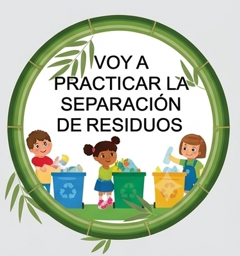
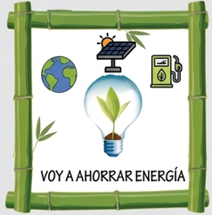
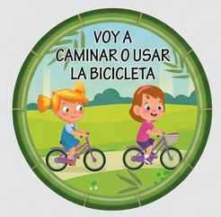
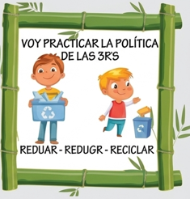
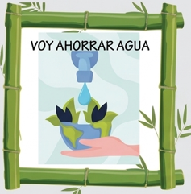

TU ACCIÓN ECOLÓGICA
Separar los residuos
Antes de botar algo, identifica si es aprovechable, orgánico o no aprovechable y deposítalo correctamente.
CADA GESTO CUENTA
Lanza el dado, recibe un hábito ecológico y conviértelo en una acción real para cuidar nuestra casa común.






Antes de botar algo, identifica si es aprovechable, orgánico o no aprovechable y deposítalo correctamente.
LAS SEIS CARAS
Pulsa una tarjeta y descubre cómo empezar hoy.
“No hay gesto demasiado pequeño cuando millones decidimos cuidar.”
Reducir · Cuidar · Regenerar